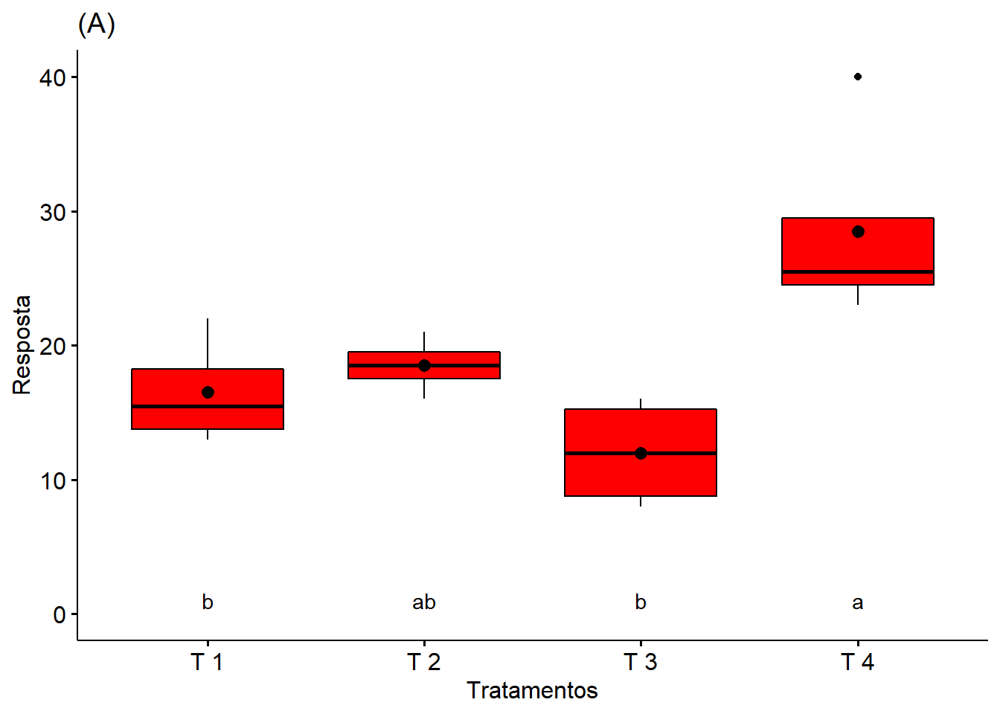
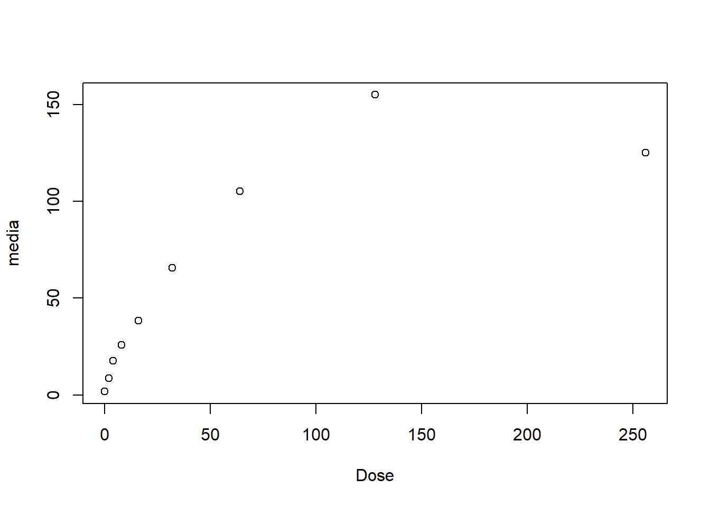
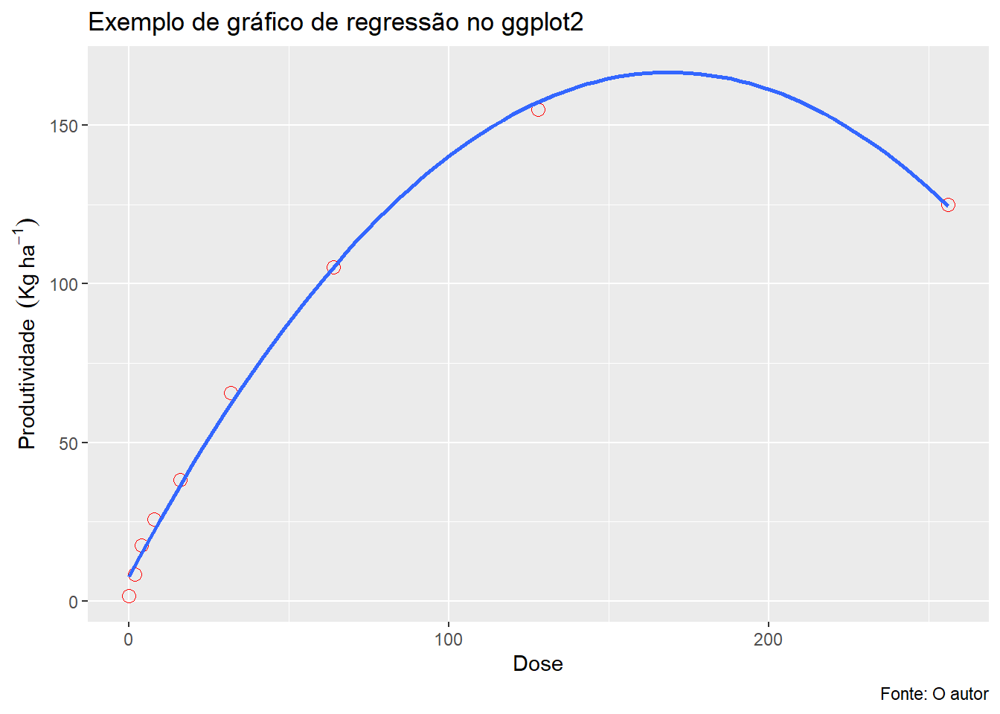
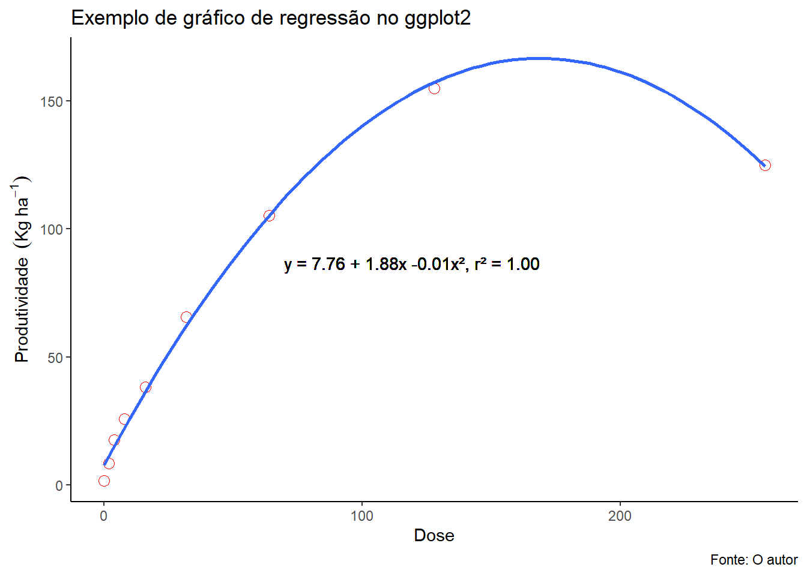
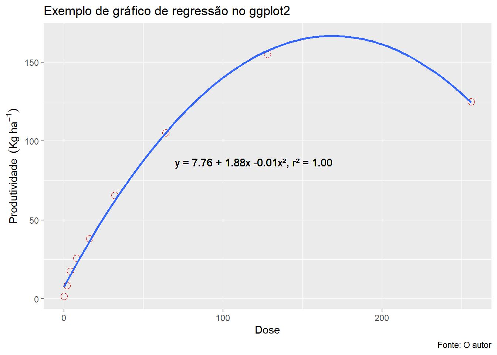

5 Regressão
O gráfico de regressão pode ser construído utilizando um gráfico de dispersão. Assim, uma análise gráfica preliminar é realizada construindo-se o gráfico de dispersão entre as variáveis em questão. Este gráfico é importante em qualquer análise de regressão já que por meio dele é possível ter uma noção do tipo de relação existente entre as variáveis (relação linear, quadrática). Esta relação na maioria das vezes não é perfeita, ou seja, os pontos não estão dispostos perfeitamente sobre a função que relaciona as duas variáveis mas deseja-se que estes pontos estejam próximos. A curva da regressão é construída sobre o gráfico de dispersão mediante às respectivas análises a serem consideradas para definir o melhor modelo.
5.0.1 Conjunto de dados
tratamentos=rep(c(0,2,4,8,16,32,64,128,256),e=4)
resposta=c(0,1,2,4,8,7,9,10,15,17,18,20,25,26,24,28,36,39,38,40,60,68,65,70,100,110,104,107,150,155,156,159,120,130,126,124)
## Média e Desvio-padrão (Por Tratamento)
Dose=c(0,2,4,8,16,32,64,128,256)
media=tapply(resposta,tratamentos, mean)
desvio=tapply(resposta,tratamentos,sd)
5.0.4 Barras de desvio-padrão
reg=plot(media~Dose,
las=1,
ylab="Resposta",
xlab="Dose")
arrows(Dose,media+desvio,Dose,media-desvio,length = 0.05,angle=90,code=3)
Adicionando barras de desvio-padrão de largura 0.05 (length=0.05), com angulo de 90 graus e tipo de flecha 3 (T ou T invertido)
5.0.5 Unidade do eixo
Y (Ex. \(Kg\ ha^{-1}\)) e X(Ex.\(Kg\ ha^{-1}\ ano^{-1}\))
reg=plot(media~Dose,
las=1,
ylab=expression("Resposta"~~(kg~ha^-1)),
xlab=expression("Dose"~(kg~ha^-1~ano^-1)))
arrows(Dose,media+desvio,Dose,media-desvio,length = 0.02,angle=90,code=3)
A função expression também pode ser usada para textos em gráficos (Função “text()” - veremos posteriormente).
5.0.6 Separação de casa decimal
options(OutDec=",")
reg=plot(media~Dose,
las=1,
ylab=expression("Resposta"~~(kg~ha^-1)),
xlab=expression("Dose"~~(kg~ha^-1~ano^-1)))
arrows(Dose,media+desvio,Dose,media-desvio,length = 0.02,angle=90,code=3)
A função “options(OutDec=”,“)” converte a casa decimal de todas as saídas posteriores ao comando para vírgula, entretanto a função não altera para gráficos do pacote ggplot2.
5.0.7 Curva de Tendência
##
## Call:
## lm(formula = media ~ Dose + I(Dose^2))
##
## Residuals:
## Min 1Q Median 3Q Max
## -6,0101 -2,3298 0,5233 2,3045 3,4953
##
## Coefficients:
## Estimate Std. Error t value Pr(>|t|)
## (Intercept) 7,7601301 1,7653406 4,396 0,00459 **
## Dose 1,8811023 0,0566083 33,230 4,94e-08 ***
## I(Dose^2) -0,0055671 0,0002241 -24,847 2,80e-07 ***
## ---
## Signif. codes: 0 '***' 0,001 '**' 0,01 '*' 0,05 '.' 0,1 ' ' 1
##
## Residual standard error: 3,709 on 6 degrees of freedom
## Multiple R-squared: 0,9967, Adjusted R-squared: 0,9956
## F-statistic: 899,4 on 2 and 6 DF, p-value: 3,674e-08plot(media~Dose,
las=1,
ylim=c(0,200),
col="red",
pch=16,
ylab=expression("Resposta"~~(kg~ha^-1)),
xlab=expression("Dose"~~(kg~ha^-1~ano^-1)))
arrows(Dose,media+desvio,Dose,media-desvio,length = 0.02,angle=90,code=3)
curve(modelo$coefficients[1]+modelo$coefficients[2]*x+modelo$coefficients[3]*x^2, add=T,col="blue")
5.0.8 Pontos de máximo/mínimo
## Para encontrar o ponto de máximo ou mínimo em equação quadrática, fazer derivada primeira de Y=0
(x=-modelo$coefficients[2]/(2*modelo$coefficients[3]))## Dose
## 168,9481## (Intercept)
## 166,6644plot(media~Dose,
las=1,
ylim=c(0,200),
col="red",
pch=16,
ylab=expression("Resposta"~~(kg~ha^-1)),
xlab=expression("Dose"~~(kg~ha^-1~ano^-1)))
arrows(Dose,media+desvio,Dose,media-desvio,length = 0.02,angle=90,code=3)
curve(modelo$coefficients[1]+modelo$coefficients[2]*x+modelo$coefficients[3]*x^2, add=T,col="blue")
abline(h=y,col="red",lty=2)
abline(v=x,col="red",lty=2)
points(x,y,pch=8,col="black")
5.0.9 Equação e R^2
plot(media~Dose,
las=1,
ylim=c(0,200),
col="red",
pch=16,
ylab=expression("Resposta"~~(kg~ha^-1)),
xlab=expression("Dose"~~(kg~ha^-1~ano^-1)))
arrows(Dose,media+desvio,Dose,media-desvio,length = 0.02,angle=90,code=3)
curve(modelo$coefficients[1]+modelo$coefficients[2]*x+modelo$coefficients[3]*x^2, add=T,col="blue")
abline(h=y,col="red",lty=2)
abline(v=x,col="red",lty=2)
points(x,y,pch=8,col="black")
text(100,50,expression(Y==7.76013+1.881102*x-0.005567102 *x^2),cex=0.8)
text(100,40,expression(R^2==1.00),cex=0.8)
5.1 Usando o pacote ggplot2
5.1.1 Gráfico básico

5.1.2 Editando gráfico
(grafico=ggplot(dados,
aes(x=Dose, y=media)) +
geom_point(colour="red", size=3, shape=1)+
geom_smooth(method="lm", se = F, formula = y~poly(x,2), show.legend = T) +
labs(title = "Exemplo de gráfico de regressão no ggplot2",
y = expression(Produtividade~~(Kg~ha^-1)), x = "Dose",
caption = "Fonte: O autor"))
geom_point(colour=“red”, size=3, shape=1): gráfico de dispersão, com pontos de cor vermelha, de tamanho 3 e formato 2 (Círculo sem preenchimento interno)
geom_smooth(method=“lm”, se = F, formula = y~poly(x,2)): Comando para plotar curva de tendência para regressão polinomial de grau 2 (Quadrático)
labs = nomear os eixos e títulos dos gráficos
5.1.3 Plotando equação
texto <- sprintf('y = %.2f + %.2fx %.2fx², r² = %.2f',modelo$coefficients[1],modelo$coefficients[2],modelo$coefficients[3],summary(modelo)$r.squared)
5.1.6 Removendo grade


5.1.7 Ponto de máximo/mínimo
(grafico=grafico+
geom_vline(xintercept = x, colour="red", linetype="dotted", size=1.2)+
geom_hline(yintercept =y,colour='red', linetype='dotted', size=1.3))
5.1.8 Tipos de linhas
d=data.frame(lt=c("blank", "solid", "dashed", "dotted", "dotdash", "longdash", "twodash", "1F", "F1", "4C88C488", "12345678"))
ggplot()+
scale_x_continuous(name="",limits=c(0,1))+
scale_y_discrete(name="linetype")+
theme_bw()+
theme_classic()+
scale_linetype_identity()+
geom_segment(data=d, mapping=aes(x=0, xend=1, y=d$lt, yend=d$lt, linetype=d$lt))
5.2 Duas curvas
5.2.1 Conjunto de dados
Variável:
- resposta: Resposta do tratamento A
- resposta1: Resposta do tratamento B
Doses: 0,2,4,8,16,32,64,128,256
dose=rep(c(0,2,4,8,16,32,64,128,256),e=4)
resposta=c(0,1,2,4,8,7,9,10,15,17,18,20,25,26,24,28,36,39,38,40,60,68,65,70,100,110,104,107,150,155,156,159,120,130,126,124)
resposta1=c(20,21,22,24,28,27,29,26,35,37,38,40,45,46,44,48,56,59,58,60,80,88,85,90,120,130,124,127,160,165,166,169,140,150,146,144)
Dose=c(0,2,4,8,16,32,64,128,256)5.2.2 Média e Desvio-padrão
media=tapply(resposta,dose, mean)
media1=tapply(resposta1,dose, mean)
desvio=tapply(resposta,dose,sd)
desvio1=tapply(resposta,dose,sd)5.2.3 Tratamento A
##
## Call:
## lm(formula = media ~ Dose + I(Dose^2))
##
## Residuals:
## Min 1Q Median 3Q Max
## -6,0101 -2,3298 0,5233 2,3045 3,4953
##
## Coefficients:
## Estimate Std. Error t value Pr(>|t|)
## (Intercept) 7,7601301 1,7653406 4,396 0,00459 **
## Dose 1,8811023 0,0566083 33,230 4,94e-08 ***
## I(Dose^2) -0,0055671 0,0002241 -24,847 2,80e-07 ***
## ---
## Signif. codes: 0 '***' 0,001 '**' 0,01 '*' 0,05 '.' 0,1 ' ' 1
##
## Residual standard error: 3,709 on 6 degrees of freedom
## Multiple R-squared: 0,9967, Adjusted R-squared: 0,9956
## F-statistic: 899,4 on 2 and 6 DF, p-value: 3,674e-08plot(media~Dose,
main="TRATAMENTO A",
ylim=c(0,200),
col="red",
ylab=expression(Resposta~(kg~ha^-1)),
xlab=expression(Dose~(kg~ha^-1~ano^-1)))
curve(coef(modelo)[1]+coef(modelo)[2]*x+coef(modelo)[3]*x^2, add=T,col="red")
legend("topleft",expression(Y==7.76013+1.88110*x-0.00557 *x^2, R^2==1.00), bty="n")
5.2.4 Tratamento B
##
## Call:
## lm(formula = media1 ~ Dose + I(Dose^2))
##
## Residuals:
## Min 1Q Median 3Q Max
## -6,959 -4,745 1,761 3,147 5,451
##
## Coefficients:
## Estimate Std. Error t value Pr(>|t|)
## (Intercept) 28,7090755 2,5811396 11,12 3,15e-05 ***
## Dose 1,7782967 0,0827680 21,48 6,63e-07 ***
## I(Dose^2) -0,0051907 0,0003276 -15,85 4,01e-06 ***
## ---
## Signif. codes: 0 '***' 0,001 '**' 0,01 '*' 0,05 '.' 0,1 ' ' 1
##
## Residual standard error: 5,423 on 6 degrees of freedom
## Multiple R-squared: 0,9924, Adjusted R-squared: 0,9898
## F-statistic: 390,2 on 2 and 6 DF, p-value: 4,442e-07plot(media1~Dose,
main="TRATAMENTO B",
ylim=c(0,200),
col="blue",
ylab=expression(Resposta~(kg~ha^-1)),
xlab=expression(Dose~(kg~ha^-1~ano^-1)))
curve(coef(modelo1)[1]+coef(modelo1)[2]*x+coef(modelo1)[3]*x^2, add=T,col="blue")
legend("topleft",expression(Y==28.70908+1.77830*x-0.00520*x^2, R^2==0.99), bty="n")
5.2.5 Juntando os Gráficos
5.2.6 Gráfico de dispersão
plot(media~Dose,
ylim=c(0,250),
col="red",
ylab=expression(Resposta~(kg~ha^-1)),
xlab=expression(Dose~(kg~ha^-1~ano^-1)))
curve(coef(modelo)[1]+coef(modelo)[2]*x+coef(modelo)[3]*x^2, add=T,col="red")
points(media1~Dose, col="blue")
curve(coef(modelo1)[1]+coef(modelo1)[2]*x+coef(modelo1)[3]*x^2, add=T,col="blue")
plot(media~Dose,
ylim=c(0,250),
col="red",
ylab=expression(Resposta~(kg~ha^-1)),
xlab=expression(Dose~(kg~ha^-1~ano^-1)))
curve(coef(modelo)[1]+coef(modelo)[2]*x+coef(modelo)[3]*x^2, add=T,col="red")
points(media1~Dose, col="blue")
curve(coef(modelo1)[1]+coef(modelo1)[2]*x+coef(modelo1)[3]*x^2, add=T,col="blue")
5.2.7 Inserindo legenda
plot(media~Dose,
ylim=c(0,250),
col="red",
ylab=expression(Resposta~(kg~ha^-1)),
xlab=expression(Dose~(kg~ha^-1~ano^-1)))
points(media1~Dose,col="blue")
legend("topleft",
col=c("red","blue"),
bty="n", pch=1,
c(expression(Y[A]==7.76013+1.88110*x-0.00557*x^2~~R^2*"=1,00"),
expression(Y[B]==28.70908+1.77830*x-0.00519*x^2~~R^2*"=0,99")))
curve(coef(modelo)[1]+coef(modelo)[2]*x+coef(modelo)[3]*x^2, add=T,col="red")
curve(coef(modelo1)[1]+coef(modelo1)[2]*x+coef(modelo1)[3]*x^2, add=T,col="blue")